Part 4 · Highway Traffic Signals · Chapter 4C
Traffic Control Signal Needs Studies
Defines the required engineering study for justifying a traffic control signal and sets out all nine traffic signal warrants — Eight-Hour Vehicular Volume, Four-Hour Vehicular Volume, Peak Hour, Pedestrian Volume, School Crossing, Coordinated Signal System, Crash Experience, Roadway Network, and Intersection Near a Grade Crossing — with their full volume, crash, and geometric thresholds.
4C.01Studies and Factors for Justifying Traffic Control Signals
- 01Except for a temporary traffic control signal (see Section 4D.11) installed in a temporary traffic control zone, before a traffic control signal is installed at a particular location, an engineering study of traffic conditions, pedestrian characteristics, and physical characteristics of the location shall be performed to determine whether installation of a traffic control signal is justified at that location.
- 01aOn State highways, the engineering study to evaluate proposed traffic control and design geometrics for intersections and other access improvements shall use the Intersection Safety and Operational Assessment Process (ISOAP) and Information Guide. Intersection geometry and traffic control shall be determined through a performance-based analysis that considers all users and supports the principles of the Safe System Approach.
- 01bOn local streets and highways, the engineering study to evaluate proposed traffic control and design geometrics for intersections and other access improvements may use the ISOAP and Information Guide. Intersection geometry and traffic control may be determined through a performance-based analysis that considers all users and supports the principles of the Safe System Approach.
- 01cRefer to Caltrans' website (https://dot.ca.gov/programs/traffic-operations/isoap) for more information on the ISOAP memo, guide, forms, related NCHRP publications, and other references and resources for the evaluation of proposed traffic control and design geometrics for intersections and other access improvements.
- 02
The investigation of the need for a traffic control signal shall include an analysis of factors related to the existing operation and safety at the study location and the potential to improve these conditions, and the applicable factors contained in the following traffic signal warrants:
- Warrant 1, Eight-Hour Vehicular Volume
- Warrant 2, Four-Hour Vehicular Volume
- Warrant 3, Peak Hour
- Warrant 4, Pedestrian Volume
- Warrant 5, School Crossing
- Warrant 6, Coordinated Signal System
- Warrant 7, Crash Experience
- Warrant 8, Roadway Network
- Warrant 9, Intersection Near a Grade Crossing
- 03The satisfaction of a traffic signal warrant or warrants shall not in itself require the installation of a traffic control signal.
- 04Sections 8D.08 and 8D.14 contain information regarding the use of traffic control signals instead of gates and/or flashing-light signals at grade crossings.
- 05When considering the installation of a traffic control signal, alternatives to traffic control signals, including those listed in Section 4B.03, should also be considered.
- 06A traffic control signal should not be installed unless one or more of the factors described in this Chapter are met.
- 07A traffic control signal should not be installed unless an engineering study indicates that installing a traffic control signal will improve the overall safety and/or operation of the intersection.
- 08The study should consider the effects of the right-turning vehicles from the minor-street approaches. Engineering judgment should be used to determine what, if any, portion of the right-turning traffic is subtracted from the minor-street traffic count when evaluating the count against the signal warrants listed in Paragraph 2 of this Section.
- 09Engineering judgment should also be used in applying various traffic signal warrants to cases where major-street approaches consist of one lane plus one left-turn or right-turn lane. The site-specific traffic characteristics should dictate whether a major-street approach is considered as one lane or two lanes. For example, for a major-street approach with one lane for through and right-turning traffic plus a left-turn lane, if engineering judgment indicates it should be considered a one-lane approach because the traffic using the left-turn lane is minor, the total traffic volume approaching the intersection should be applied against the signal warrants as a one-lane approach. The major-street approach should be considered two lanes if approximately half of the traffic on the approach turns left and the left-turn lane is of sufficient length to accommodate all left-turning vehicles.
- 10Similar engineering judgment and rationale should be applied to a minor-street approach with one through/left-turn lane plus a right-turn lane. In this case, the degree of conflict of minor-street right-turning traffic with traffic on the major street should be considered. Thus, right-turning traffic should not be included in the minor-street volume if the movement enters the major street with minimal conflict. The minor-street approach should be evaluated as a one-lane approach with only the traffic volume in the through/left-turn lane considered.
- 11If a minor-street approach has one combined through/right-turn lane plus a left-turn lane, the approach should either be analyzed as a two-lane approach based on the sum of the traffic volumes using both lanes or as a one-lane approach based on only the traffic volume in the approach lane with the higher volume.
- 12At a location that is under development or construction or at a location where it is not possible to obtain a traffic count that would represent future traffic conditions, hourly volumes should be estimated as part of an engineering study for comparison with traffic signal warrants. Except for locations where the engineering study uses the satisfaction of Warrant 8 to justify a signal, a traffic control signal installed under projected conditions should have an engineering study done within 1 year of putting the signal into steady (stop-and-go) operation to determine if the signal is justified. If not justified, the signal should be taken out of steady (stop-and-go) operation or removed.
- 13For signal warrant analysis, a location with a wide median may be analyzed as one intersection or as two intersections (see Section 2A.23) based on engineering judgment. Refer to CVC § 21361(a) for designation as a single intersection, for locations on the state highway system.
- 14At an intersection with a high volume of left-turning traffic from the major street, the signal warrant analysis may be performed in a manner that considers the higher of the major-street left-turn volumes as the "minor-street" volume and the corresponding single direction of opposing traffic on the major street as the "major-street" volume; or the major-street left-turn volumes plus the higher-volume minor-street approach as the "minor-street" volume and both approaches of the major street minus the higher of the major-street left-turn volume as the "major-street" volume.
- 15For signal warrants requiring conditions to be present for a certain number of hours in order to be satisfied, any four consecutive 15-minute periods may be considered as 1 hour if the separate 1-hour periods used in the warrant analysis do not overlap each other and both the major-street volume and the minor-street volume are for the same specific 1-hour periods.
- 16For signal warrant analysis, bicyclists may be counted as either vehicles or pedestrians.
- 17When performing a signal warrant analysis, bicyclists riding in the street with other vehicular traffic are usually counted as vehicles and bicyclists who are clearly using pedestrian facilities are usually counted as pedestrians.
- 18
Engineering study data may include the following:
- A. The number of vehicles entering the intersection in each hour from each approach during 12 hours of an average day. It is desirable that the hours selected contain the greatest percentage of the 24-hour traffic volume.
- B. Vehicular volumes for each traffic movement from each approach, classified by vehicle type (heavy trucks, passenger cars and light trucks, public-transit vehicles, and, in some locations, bicycles), during each 15-minute period of the 2 hours in the morning and 2 hours in the afternoon during which the total traffic entering the intersection is the greatest.
- C. Pedestrian volume counts on each crosswalk during the same periods as the vehicular counts in Item B and during the hours of highest pedestrian volume. Where young, elderly, and/or persons with physical or vision disabilities need special consideration, the pedestrians and their crossing times may be classified by general observation.
- D. Information about nearby facilities and activity centers that serve the young, elderly, and/or persons with disabilities, including requests from persons with disabilities for accessible crossing improvements at the location under study. These persons might not be adequately reflected in the pedestrian volume count if the absence of a signal restrains their mobility.
- E. The posted or statutory speed limit or the 85th-percentile speed on the uncontrolled approaches to the location.
- F. A condition diagram showing details of the physical layout, including such features as intersection geometrics, channelization, grades, sight-distance restrictions, transit stops and routes, parking conditions, pavement markings, roadway lighting, driveways, nearby railroad crossings, distance to the nearest traffic control signals, utility poles and fixtures, and adjacent land use.
- G. A collision diagram showing crash experience by type, location, direction of movement, severity, weather, time of day, date, and day of week for at least 1 year.
- 19
The following data, which are desirable for a more precise understanding of the operation of the intersection, may be obtained during the periods described in Item B of Paragraph 18 of this Section:
- A. Vehicle-hours of stopped-time delay determined separately for each approach.
- B. The number and distribution of acceptable gaps in vehicular traffic on the major street for entrance from the minor street.
- C. The posted or statutory speed limit or the 85th-percentile speed on controlled approaches at a point near to the intersection but unaffected by the control.
- D. Pedestrian delay time for at least two 30-minute peak pedestrian delay periods of an average weekday or like periods of a Saturday or Sunday.
- E. Queue length on stop-controlled approaches.
- 19aDelay, congestion, approach conditions, driver confusion, future land use, or other evidence of the need for right-of-way assignment beyond that which could be provided by a stop sign shall be documented.
- 19bFigure 4C-101(CA) and Figure 4C-103(CA) are examples of warrant sheets.
- 19cFigure 4C-103(CA) should be used only for new intersections or other locations where it is not reasonable to count actual traffic volumes.
- 20The safe and efficient movement of all road users is the primary consideration in the engineering study to determine whether to install a traffic control signal or to install some other type of control or roadway configuration. Installation of a traffic control signal does not necessarily result in improved safety in every case. In some cases, the installation of a traffic control signal at an inappropriate location could adversely impact safety for one or more types of road users. The purpose of the engineering study is to evaluate all of the factors that are relevant to a specific location. The satisfaction of a warrant (or warrants) is one of the relevant factors in the engineering study, but it is not intended to be the only factor or even the overriding consideration. Agencies can install a traffic control signal at a location where no warrants are met, but only after conducting an engineering study that documents the rationale for deciding that the installation of a traffic control signal is the best solution for improving the overall safety and/or operation at the location.
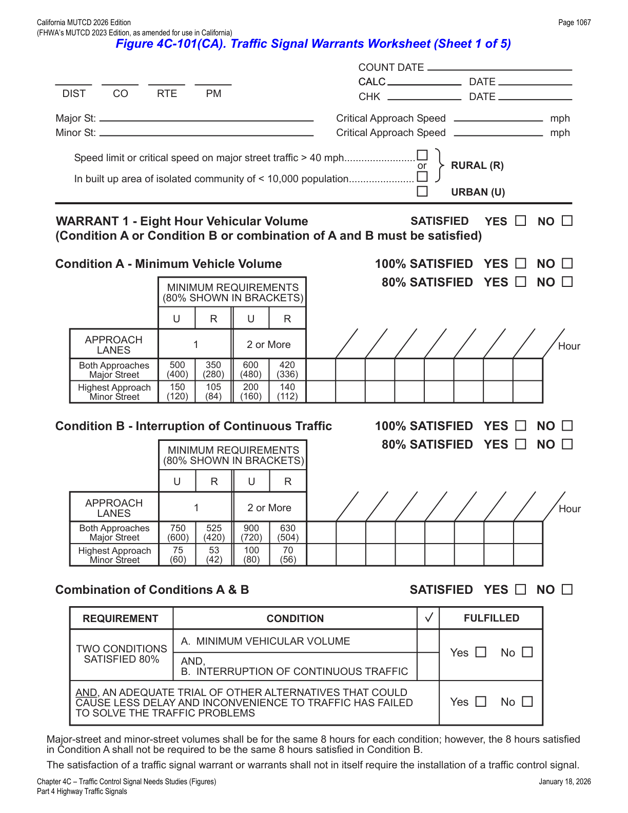
4C.02Warrant 1, Eight-Hour Vehicular Volume
- 01The Minimum Vehicular Volume, Condition A (see Table 4C-1), is intended for application at locations where a large volume of intersecting traffic is the principal reason to consider installing a traffic control signal.
- 02The Interruption of Continuous Traffic, Condition B (see Table 4C-1), is intended for application at locations where Condition A is not satisfied and where the traffic volume on a major street is so heavy that traffic on a minor intersecting street suffers excessive delay or conflict in entering or crossing the major street.
- 03It is intended that Warrant 1 be treated as a single warrant. If Condition A is satisfied, then Warrant 1 is satisfied and analyses of Condition B and the combination of Conditions A and B are not needed. Similarly, if Condition B is satisfied, then Warrant 1 is satisfied and an analysis of the combination of Conditions A and B is not needed.
- 04
The need for a traffic control signal should be considered if an engineering study finds that one of the following conditions exists for each of any 8 hours of an average day:
- A. The vehicles per hour given in both of the 100 percent columns of Condition A in Table 4C-1 exist on the major street and the more critical minor-street approach, respectively, to the intersection; or
- B. The vehicles per hour given in both of the 100 percent columns of Condition B in Table 4C-1 exist on the major street and the more critical minor-street approach, respectively, to the intersection.
- 05These major-street and minor-street volumes shall be for the same 8 hours for each condition; however, the 8 hours that are selected for the Condition A analysis shall not be required to be the same 8 hours that are selected for the Condition B analysis.
- 06On the minor street, the more critical volume is not required to be on the same approach during each of these 8 hours. The more critical minor-street volume is the one that meets the warranting criteria for that approach, and in the case of a one-lane minor-street approach that is opposite from a multi-lane minor-street approach might not have the higher volume.
- 07If the posted or statutory speed limit or the 85th-percentile speed on the major street exceeds 40 mph, or if the intersection lies within the built-up area of an isolated community having a population of less than 10,000, the traffic volumes in the 70 percent columns in Table 4C-1 may be used in place of the 100 percent columns.
- 08The combination of Conditions A and B is intended for application at locations where Condition A is not satisfied and Condition B is not satisfied and should be applied only after an adequate trial of other alternatives that could cause less delay and inconvenience to traffic has failed to solve the traffic problems.
- 09
The need for a traffic control signal should be considered if an engineering study finds that both of the following conditions exist for each of any 8 hours of an average day:
- A. The vehicles per hour given in both of the 80 percent columns of Condition A in Table 4C-1 exist on the major street and the more critical minor-street approach, respectively, to the intersection; and
- B. The vehicles per hour given in both of the 80 percent columns of Condition B in Table 4C-1 exist on the major street and the more critical minor-street approach, respectively, to the intersection.
- 10These major-street and minor-street volumes shall be for the same 8 hours for each condition; however, the 8 hours satisfied in Condition A shall not be required to be the same 8 hours satisfied in Condition B.
- 11On the minor street, the more critical volume is not required to be on the same approach during each of the 8 hours. The more critical minor-street volume is the one that meets the warranting criteria for that approach, and in the case of a one-lane minor-street approach that is opposite from a multi-lane minor-street approach might not have the higher volume.
- 12If the posted or statutory speed limit or the 85th-percentile speed on the major street exceeds 40 mph, or if the intersection lies within the built-up area of an isolated community having a population of less than 10,000, the traffic volumes in the 56 percent columns in Table 4C-1 may be used in place of the 80 percent columns.
| Major-St. Lanes | Minor-St. Lanes | Major St. 100% | 80% | 70% | 56% | Minor St. 100% | 80% | 70% | 56% |
|---|---|---|---|---|---|---|---|---|---|
| 1 | 1 | 500 | 400 | 350 | 280 | 150 | 120 | 105 | 84 |
| 2 or more | 1 | 600 | 480 | 420 | 336 | 150 | 120 | 105 | 84 |
| 2 or more | 2 or more | 600 | 480 | 420 | 336 | 200 | 160 | 140 | 112 |
| 1 | 2 or more | 500 | 400 | 350 | 280 | 200 | 160 | 140 | 112 |
| Major-St. Lanes | Minor-St. Lanes | Major St. 100% | 80% | 70% | 56% | Minor St. 100% | 80% | 70% | 56% |
|---|---|---|---|---|---|---|---|---|---|
| 1 | 1 | 750 | 600 | 525 | 420 | 75 | 60 | 53 | 42 |
| 2 or more | 1 | 900 | 720 | 630 | 504 | 75 | 60 | 53 | 42 |
| 2 or more | 2 or more | 900 | 720 | 630 | 504 | 100 | 80 | 70 | 56 |
| 1 | 2 or more | 750 | 600 | 525 | 420 | 100 | 80 | 70 | 56 |
Vehicles per hour on major street = total of both approaches; vehicles per hour on minor street = the more critical (higher-volume) approach, one direction only. The 100% column is the basic minimum hourly volume; the 80% columns are used for the combination of Conditions A and B after an adequate trial of other remedial measures; the 70%/56% columns may substitute for the 100%/80% columns respectively when the major-street speed exceeds 40 mph or the intersection is in an isolated community of under 10,000 population.
4C.03Warrant 2, Four-Hour Vehicular Volume
- 01The Four-Hour Vehicular Volume signal warrant conditions are intended to be applied where the volume of intersecting traffic is the principal reason to consider installing a traffic control signal.
- 02The need for a traffic control signal should be considered if an engineering study finds that, for each of any 4 hours of an average day, the plotted points representing the vehicles per hour on the major street (total of both approaches) and the corresponding vehicles per hour on the more critical minor-street approach (one direction only) all fall above the applicable curve in Figure 4C-1 for the existing combination of approach lanes.
- 03On the minor street, the more critical volume is not required to be on the same approach during each of these 4 hours. The more critical minor-street volume is the one that meets the warranting criteria for that approach, and in the case of a one-lane minor-street approach that is opposite from a multi-lane minor-street approach might not have the higher volume.
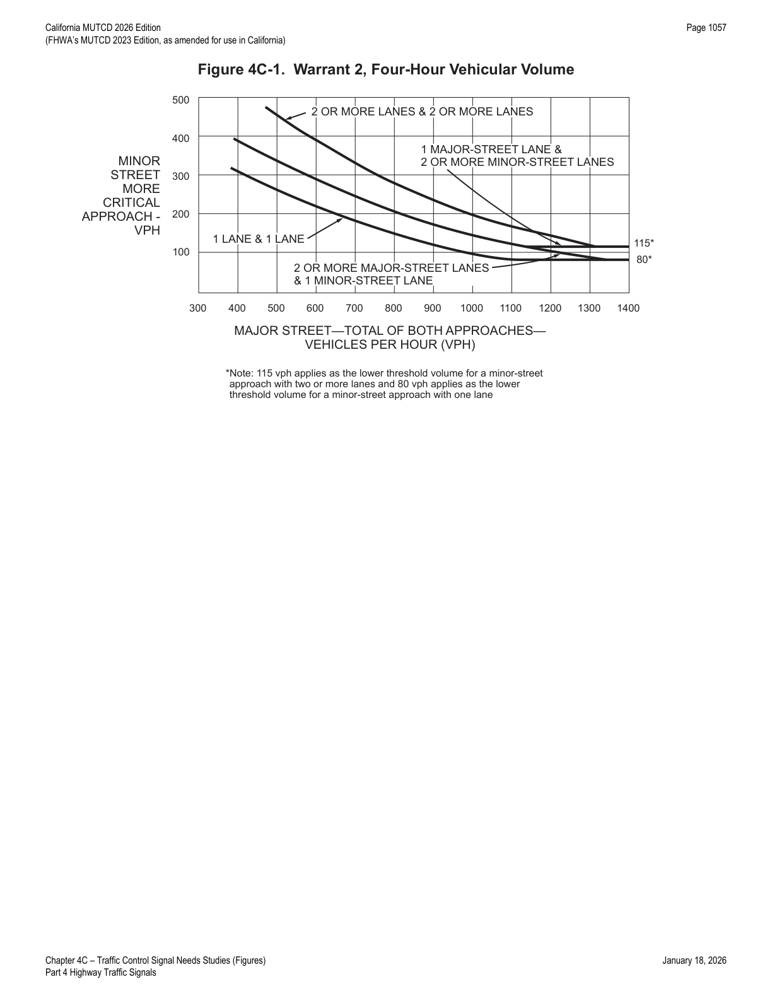
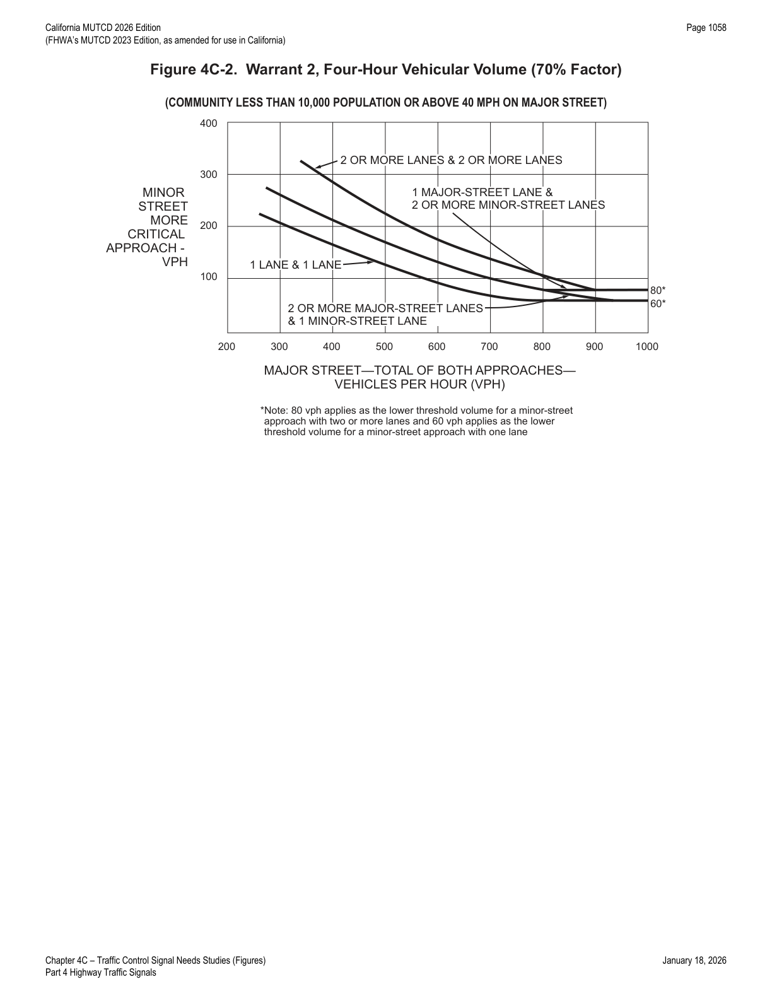
4C.04Warrant 3, Peak Hour
- 01The Peak Hour signal warrant is intended for use at a location where traffic conditions are such that for a minimum of 1 hour of an average day, the minor-street traffic suffers undue delay when entering or crossing the major street.
- 02This signal warrant should be applied only in unusual cases, such as office complexes, manufacturing plants, industrial complexes, or high-occupancy vehicle facilities that attract or discharge large numbers of vehicles over a short time.
- 03
The need for a traffic control signal should be considered if an engineering study finds that the criteria in either of the following two categories are met:
- A. If all three of the following conditions exist for the same 1 hour (any four consecutive 15-minute periods) of an average day: (1) the total stopped-time delay experienced by the traffic on one minor-street approach (one direction only) controlled by a STOP sign equals or exceeds 4 vehicle-hours for a one-lane approach or 5 vehicle-hours for a two-lane approach, and (2) the volume on the same minor-street approach (one direction only) equals or exceeds 100 vehicles per hour for one moving lane of traffic or 150 vehicles per hour for two moving lanes, and (3) the total entering volume serviced during the hour equals or exceeds 650 vehicles per hour for intersections with three approaches or 800 vehicles per hour for intersections with four or more approaches.
- B. The plotted point representing the vehicles per hour on the major street (total of both approaches) and the corresponding vehicles per hour on the more critical minor-street approach (one direction only) for 1 hour (any four consecutive 15-minute periods) of an average day falls above the applicable curve in Figure 4C-3 for the existing combination of approach lanes.
- 04If the posted or statutory speed limit or the 85th-percentile speed on the major street exceeds 40 mph, or if the intersection lies within the built-up area of an isolated community having a population of less than 10,000, Figure 4C-4 may be used in place of Figure 4C-3 to evaluate the criteria in Item B of Paragraph 3 of this Section.
- 05If this warrant is the only warrant met and a traffic control signal is justified by an engineering study, the traffic control signal may be operated in the flashing mode during the hours that the volume criteria of this warrant are not met.
- 06If this warrant is the only warrant met and a traffic control signal is justified by an engineering study, the traffic control signal should be traffic-actuated.
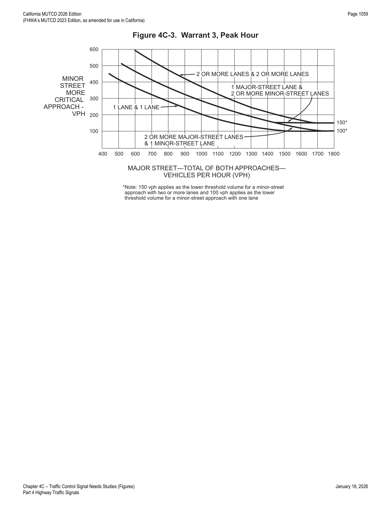
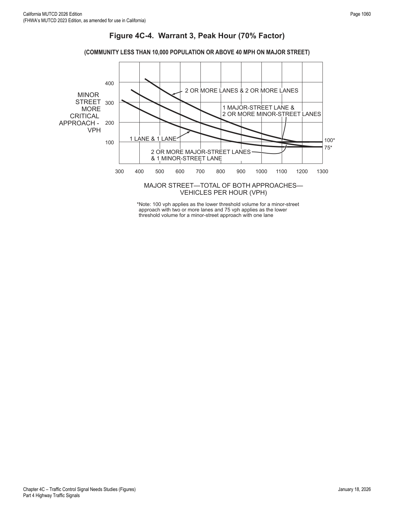
4C.05Warrant 4, Pedestrian Volume
- 01The Pedestrian Volume signal warrant is intended for application where the traffic volume on a major street is so heavy that pedestrians experience excessive delay in crossing the major street.
- 02
The need for a traffic control signal at an intersection or midblock crossing should be considered if an engineering study finds that one of the following criteria is met:
- A. For each of any 4 hours of an average day, the plotted points representing the vehicles per hour on the major street (total of both approaches) and the corresponding pedestrians per hour crossing the major street (total of all crossings) all fall above the curve in Figure 4C-5; or
- B. For 1 hour (any four consecutive 15-minute periods) of an average day, the plotted point representing the vehicles per hour on the major street (total of both approaches) and the corresponding pedestrians per hour crossing the major street (total of all crossings) falls above the curve in Figure 4C-6.
- 03If the posted or statutory speed limit or the 85th-percentile speed on the major street exceeds 35 mph, or if the intersection lies within the built-up area of an isolated community having a population of less than 10,000, Figure 4C-7 may be used in place of Figure 4C-5 to evaluate Item A in Paragraph 2 of this Section, and Figure 4C-8 may be used in place of Figure 4C-6 to evaluate Item B in Paragraph 2 of this Section.
- 04Where there is a divided street having a median of sufficient width for pedestrians to wait, the criteria in Items A and B of Paragraph 2 of this Section may be applied separately to each direction of vehicular traffic.
- 05The Pedestrian Volume signal warrant should not be applied at locations where the distance to the nearest traffic control signal or STOP sign controlling the street that pedestrians desire to cross is less than 300 feet, unless the proposed traffic control signal will not restrict the progressive movement of traffic.
- 06If this warrant is met and a traffic control signal is justified by an engineering study, the traffic control signal shall be equipped with pedestrian signal heads complying with the provisions set forth in Chapter 4I.
- 07
If this warrant is met and a traffic control signal is justified by an engineering study, then:
- A. If it is installed at an intersection or major driveway location, the traffic control signal should also control the minor-street or driveway traffic, should be traffic-actuated, and should include pedestrian detection.
- B. If it is installed at a non-intersection crossing, the traffic control signal should be installed at least 100 feet from side streets or driveways that are controlled by STOP or YIELD signs, and should be pedestrian-actuated. If installed at a non-intersection crossing, at least one signal face should be over the traveled way for each approach, parking and other sight obstructions should be prohibited for at least 100 feet in advance of and at least 20 feet beyond the crosswalk (or site accommodations made through curb extensions or other techniques to provide adequate sight distance), and the installation should include suitable standard signs and pavement markings.
- C. Furthermore, if it is installed within a signal system, the traffic control signal should be coordinated.
- 08The criterion for the pedestrian volume crossing the major street may be reduced as much as 50 percent if the 15th-percentile crossing speed of pedestrians is less than 3.5 feet per second (see Figures 4C-5 through 4C-8).
- 09A traffic control signal may not be needed at the study location if adjacent coordinated traffic control signals consistently provide gaps of adequate length for pedestrians to cross the street.
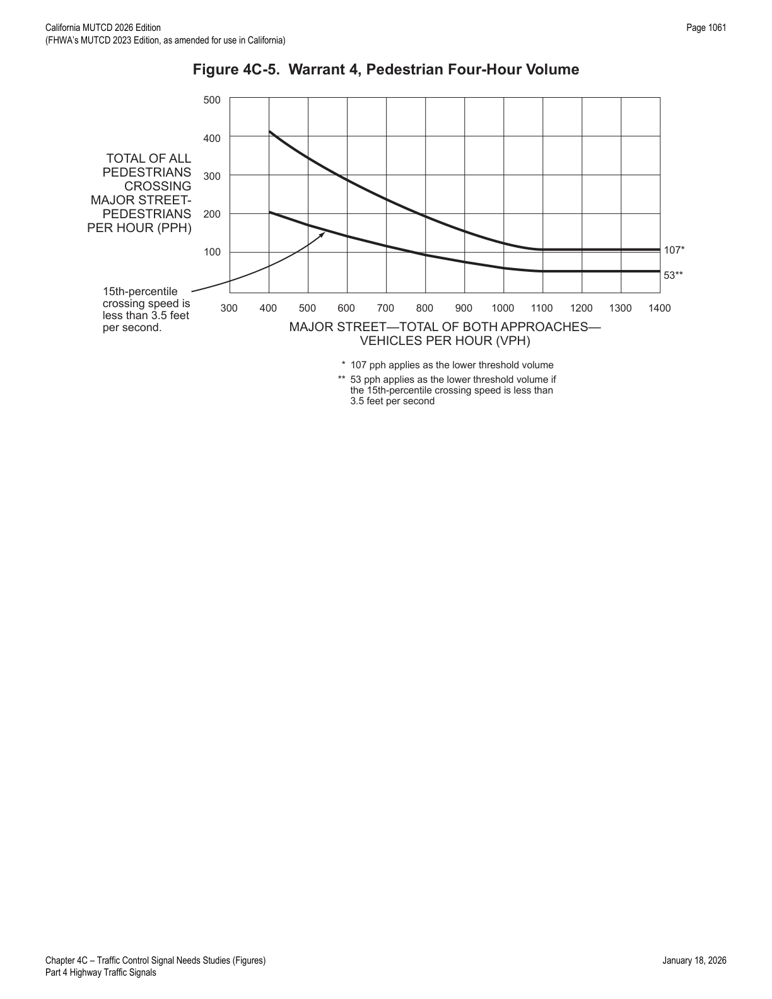
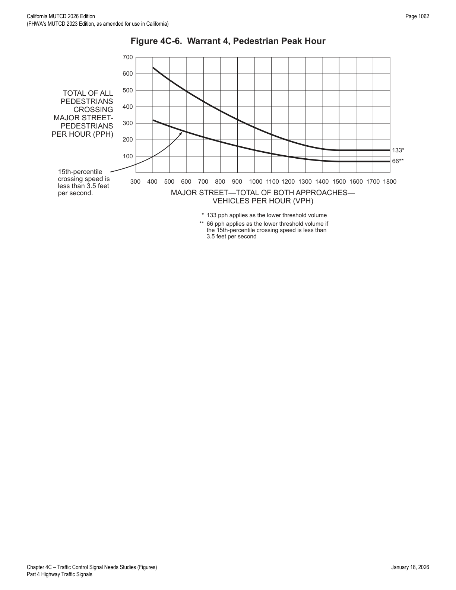
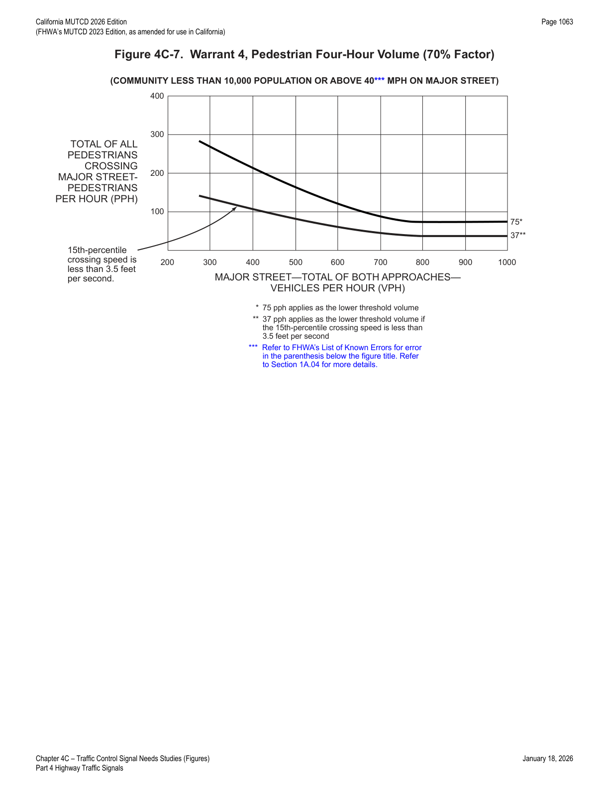
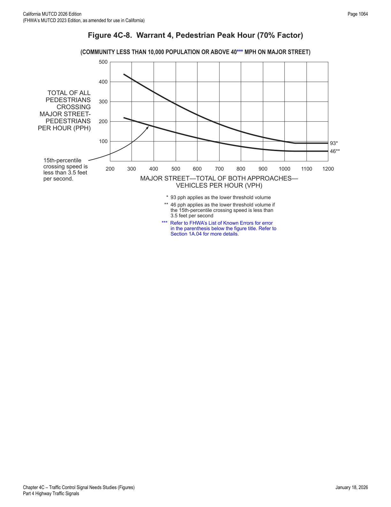
4C.06Warrant 5, School Crossing
- 01The School Crossing signal warrant is intended for application where the fact that schoolchildren cross the major street is the principal reason to consider installing a traffic control signal. For the purposes of this warrant, the word "schoolchildren" includes elementary through high school students.
- 02The need for a traffic control signal should be considered when an engineering study of the frequency and adequacy of gaps in the vehicular traffic stream as related to the number and size of groups of schoolchildren at an established school crossing across the major street shows that the number of adequate gaps in the traffic stream during the period when the schoolchildren are using the crossing is less than the number of minutes in the same period and there are a minimum of 20 schoolchildren during the highest crossing hour.
- 03Before a decision is made to install a traffic control signal, consideration should be given to the implementation of other remedial measures, such as warning signs and flashers, school speed zones, school crossing guards, or a grade-separated crossing.
- 04The School Crossing signal warrant should not be applied at locations where the distance to the nearest traffic control signal along the major street is less than 300 feet, unless the proposed traffic control signal will not restrict the progressive movement of traffic.
- 05If this warrant is met and a traffic control signal is justified by an engineering study, the traffic control signal shall be equipped with pedestrian signal heads complying with the provisions set forth in Chapter 4I.
- 06
If this warrant is met and a traffic control signal is justified by an engineering study, then:
- A. If it is installed at an intersection or major driveway location, the traffic control signal should also control the minor-street or driveway traffic, should be traffic-actuated, and should include pedestrian detection.
- B. If it is installed at a non-intersection crossing, the traffic control signal should be installed at least 100 feet from side streets or driveways controlled by STOP or YIELD signs, and should be pedestrian-actuated, with at least one signal face over the traveled way for each approach, parking and sight obstructions prohibited for at least 100 feet in advance of and 20 feet beyond the crosswalk (or equivalent site accommodations), and suitable standard signs and pavement markings.
- C. Furthermore, if it is installed within a signal system, the traffic control signal should be coordinated.
- 07
Criterion for school crossing traffic signals shall be as follows:
- A. The signal shall be designed for full-time operation.
- B. Pedestrian signal faces shall be installed at all marked crosswalks at signalized intersections along the "Suggested Route to School."
- C. If an intersection is signalized under this guideline for school pedestrians, the entire intersection shall be signalized.
- DSchool area traffic signals should be traffic-actuated type with push buttons or other detectors for pedestrians.
- 08Non-intersection school pedestrian crosswalk locations may be signalized when justified.
In practice: the "gaps versus minutes" test is the crux of Warrant 5 — count how many gaps in major-street traffic are long enough for a group of schoolchildren to cross safely during the crossing period, and compare that count to the number of minutes in the same period; if adequate gaps are scarcer than minutes (and at least 20 children use the crossing in the peak hour), the warrant is met.
4C.07Warrant 6, Coordinated Signal System
- 01Progressive movement in a coordinated signal system sometimes necessitates installing traffic control signals at intersections where they would not otherwise be needed in order to maintain proper platooning of vehicles.
- 02
The need for a traffic control signal should be considered if an engineering study finds that one of the following criteria is met:
- A. On a one-way street or a street that has traffic predominantly in one direction, the adjacent traffic control signals are so far apart that they do not provide the necessary degree of vehicular platooning.
- B. On a two-way street, adjacent traffic control signals do not provide the necessary degree of platooning and the proposed and adjacent traffic control signals will collectively provide a progressive operation.
- 03The Coordinated Signal System signal warrant should not be applied where the resultant spacing of traffic control signals would be less than 1,000 feet.
4C.08Warrant 7, Crash Experience
- 01The Crash Experience signal warrant conditions are intended for application where the severity and frequency of crashes are the principal reasons to consider installing a traffic control signal.
- 02
The need for a traffic control signal should be considered if an engineering study finds that all of the following criteria are met:
- A. Adequate trial of alternatives with satisfactory observance and enforcement has failed to reduce the crash frequency; and
- B. At least one of the following conditions applies to the reported crash history (where each reported crash considered is related to the intersection and apparently exceeds the applicable requirements for a reportable crash): (1) the number of reported angle crashes and pedestrian crashes within a 1-year period equals or exceeds the threshold number in Table 4C-2 for total angle crashes and pedestrian crashes (all severities); or (2) the number of reported fatal-and-injury angle crashes and pedestrian crashes within a 1-year period equals or exceeds the threshold number in Table 4C-2 for total fatal-and-injury angle crashes and pedestrian crashes; or (3) the number of reported angle crashes and pedestrian crashes within a 3-year period equals or exceeds the threshold number in Table 4C-3 for total angle crashes and pedestrian crashes (all severities); or (4) the number of reported fatal-and-injury angle crashes and pedestrian crashes within a 3-year period equals or exceeds the threshold number in Table 4C-3 for total fatal-and-injury angle crashes and pedestrian crashes; and
- C. For each of any 8 hours of an average day, the vph given in both of the 80 percent columns of Condition A in Table 4C-1 (see Section 4C.02), or the vph in both of the 80 percent columns of Condition B in Table 4C-1, exists on the major street and the more critical minor-street approach, respectively, to the intersection, or the volume of pedestrian traffic is not less than 80 percent of the requirements specified in the Pedestrian Volume warrant (see Section 4C.05).
- 03These major-street and minor-street volumes shall be for the same 8 hours.
- 04On the minor street, the more critical volume is not required to be on the same approach during each of these 8 hours. The more critical minor-street volume is the one that meets the warranting criteria for that approach, and in the case of a one-lane minor-street approach that is opposite from a multi-lane minor-street approach might not have the higher volume.
- 05 If the posted or statutory speed limit or the 85th-percentile speed on the major street exceeds 40 mph, or if the intersection lies within the built-up area of an isolated community having a population of less than 10,000:
- 06Agencies may calibrate Highway Safety Manual (HSM) (AASHTO, 2010) safety performance functions (SPFs) to their own crash data or develop their own SPFs to produce agency-specific average crash frequency values. When documented as part of the engineering study, these agency-specific crash frequency values may be used instead of the values shown in Tables 4C-2 through 4C-5 when applying the Crash Experience signal warrant.
- 07The values in Tables 4C-2 through 4C-5 for Minimum Number of Reported Crashes that correspond to the Crash Experience signal warrant were derived using the safety performance functions (SPFs) in the Highway Safety Manual (HSM) (AASHTO, 2010) for stop-controlled and signalized intersections with characteristics that are considered typical. The values in Tables 4C-2 through 4C-5 are representative of average crash frequency for the given intersection condition. The values correspond to the threshold at which the signalized intersection safety performance outperforms the stop-controlled intersection, for otherwise identical conditions and equivalent traffic.
| Major-St. Through Lanes | Minor-St. Through Lanes | Total Angle + Ped. (All Severities) — 4 Legs | 3 Legs | Fatal + Injury Angle + Ped. — 4 Legs | 3 Legs |
|---|---|---|---|---|---|
| 1 | 1 | 5 | 4 | 3 | 3 |
| 2 or more | 1 | 5 | 4 | 3 | 3 |
| 2 or more | 2 or more | 5 | 4 | 3 | 3 |
| 1 | 2 or more | 5 | 4 | 3 | 3 |
| Major-St. Through Lanes | Minor-St. Through Lanes | Total Angle + Ped. (All Severities) — 4 Legs | 3 Legs | Fatal + Injury Angle + Ped. — 4 Legs | 3 Legs |
|---|---|---|---|---|---|
| 1 | 1 | 6 | 5 | 4 | 4 |
| 2 or more | 1 | 6 | 5 | 4 | 4 |
| 2 or more | 2 or more | 6 | 5 | 4 | 4 |
| 1 | 2 or more | 6 | 5 | 4 | 4 |
| Major-St. Through Lanes | Minor-St. Through Lanes | Total Angle + Ped. (All Severities) — 4 Legs | 3 Legs | Fatal + Injury Angle + Ped. — 4 Legs | 3 Legs |
|---|---|---|---|---|---|
| 1 | 1 | 4 | 3 | 3 | 3 |
| 2 or more | 1 | 10 | 9 | 6 | 6 |
| 2 or more | 2 or more | 10 | 9 | 6 | 6 |
| 1 | 2 or more | 4 | 3 | 3 | 3 |
| Major-St. Through Lanes | Minor-St. Through Lanes | Total Angle + Ped. (All Severities) — 4 Legs | 3 Legs | Fatal + Injury Angle + Ped. — 4 Legs | 3 Legs |
|---|---|---|---|---|---|
| 1 | 1 | 6 | 5 | 4 | 4 |
| 2 or more | 1 | 16 | 13 | 9 | 9 |
| 2 or more | 2 or more | 16 | 13 | 9 | 9 |
| 1 | 2 or more | 6 | 5 | 4 | 4 |
Angle crashes include all crashes that occur at an angle and involve one or more vehicles on the major street and one or more vehicles on the minor street. Crash counts must be crashes susceptible to correction by a traffic signal and involving injury or damage exceeding the requirements for a reportable crash.
4C.09Warrant 8, Roadway Network
- 01Installing a traffic control signal at some intersections might be justified to encourage concentration and organization of traffic flow on a roadway network.
- 02
The need for a traffic control signal should be considered if an engineering study finds that the common intersection of two or more major routes meets one or both of the following criteria:
- A. The intersection has a total existing, or immediately projected, entering volume of at least 1,000 vehicles per hour during the peak hour of a typical weekday and has 5-year projected traffic volumes, based on an engineering study, that meet one or more of Warrants 1, 2, and 3 during an average weekday; or
- B. The intersection has a total existing or immediately projected entering volume of at least 1,000 vehicles per hour for each of any 5 hours of a non-normal business day (Saturday or Sunday).
- 03
A major route as used in this signal warrant should have at least one of the following characteristics:
- A. It is part of the street or highway system that serves as the principal roadway network for through traffic flow;
- B. It includes rural or suburban highways outside, entering, or traversing a city; or
- C. It appears as a major route on an official plan, such as a major street plan in an urban area traffic and transportation study.
4C.10Warrant 9, Intersection Near a Grade Crossing
- 01The Intersection Near a Grade Crossing signal warrant is intended for use at a location where none of the conditions described in the other eight traffic signal warrants are met, but the proximity of a grade crossing on an approach controlled by a STOP or YIELD sign at a highway-highway intersection is the principal reason to consider installing a traffic control signal.
- 02
This signal warrant should be applied only after adequate consideration has been given to other alternatives or after a trial of an alternative has failed to alleviate the safety concerns associated with the grade crossing. Among the alternatives that should be considered or tried are:
- A. Providing additional pavement that would enable vehicles to clear the track or that would provide space for an evasive maneuver, or
- B. Reassigning the stop controls at the highway-highway intersection to make the approach across the track a non-stopping approach.
- 03
The need for a traffic control signal should be considered if an engineering study finds that both of the following criteria are met:
- A. A grade crossing exists on an approach controlled by a STOP or YIELD sign at a highway-highway intersection and the center of the track nearest to the intersection is within 140 feet of the stop line or yield line on the approach; and
- B. During the highest traffic volume hour during which rail traffic uses the crossing, the plotted point representing the vehicles per hour on the major street (total of both approaches) of the highway-highway intersection and the corresponding vehicles per hour on the minor-street approach that crosses the track (one direction only, approaching the intersection) falls above the applicable curve in Figure 4C-9 or 4C-10 for the existing combination of approach lanes over the track and the distance D, which is the clear storage distance as defined in Section 1C.02.
- 04
The following considerations apply when plotting the traffic volume data on Figure 4C-9 or 4C-10:
- A. Figure 4C-9 should be used if there is only one lane approaching the highway-highway intersection at the track crossing location and Figure 4C-10 should be used if there are two or more lanes approaching the highway-highway intersection at the track crossing location.
- B. After determining the actual distance D, the curve for the distance D that is nearest to the actual distance D should be used. For example, if the actual distance D is 95 feet, the plotted point should be compared to the curve for D=90 feet.
- C. If the rail traffic arrival times are unknown, the highest traffic volume hour of the day should be used.
- 05The traffic volume on the minor-street approach to the highway-highway intersection may be multiplied by up to three adjustment factors as provided in Paragraphs 6 through 8 of this Section.
- 06Because the curves are based on an average of four occurrences of rail traffic per day, the vehicles per hour on the minor-street approach may be multiplied by the adjustment factor shown in Table 4C-6 for the appropriate number of occurrences of rail traffic per day.
- 07Because the curves are based on typical vehicle occupancy, if at least 2% of the vehicles crossing the track are buses carrying at least 20 people, the vehicles per hour on the minor-street approach may be multiplied by the adjustment factor shown in Table 4C-7 for the appropriate percentage of high-occupancy buses.
- 08Because the curves are based on tractor-trailer trucks comprising 10% of the vehicles crossing the track, the vehicles per hour on the minor-street approach may be multiplied by the adjustment factor shown in Table 4C-8 for the appropriate distance and percentage of tractor-trailer trucks.
- 09
If this warrant is met and a traffic control signal at the highway-highway intersection is justified by an engineering study, then:
- A. The traffic control signal shall have actuation on the minor street,
- B. Preemption control shall be provided in accordance with Sections 4F.19 and 8D.09, and
- C. The grade crossing shall have flashing-light signals (see Section 8D.02).
- 10If this warrant is met and a traffic control signal at the highway-highway intersection is justified by an engineering study, the grade crossing should have automatic gates (see Section 8D.03).
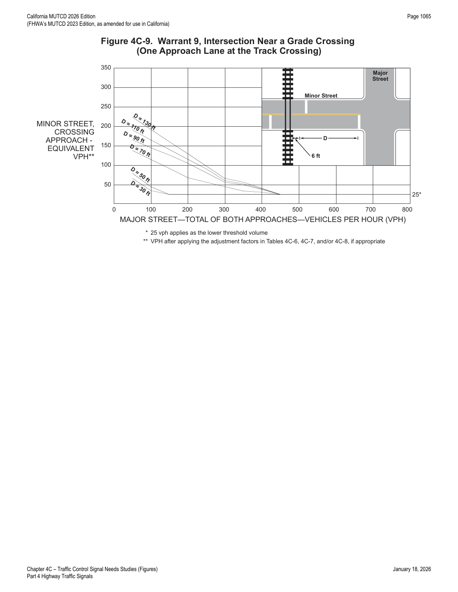
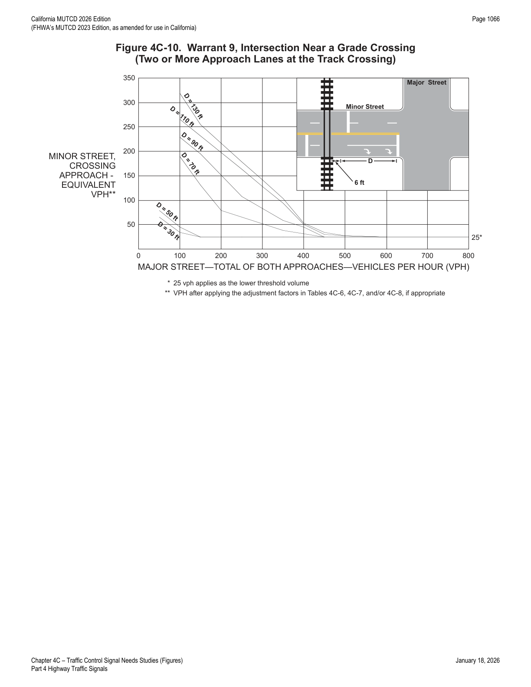
| Rail traffic per day | Adjustment factor |
|---|---|
| 1 | 0.67 |
| 2 | 0.91 |
| 3 to 5 | 1.00 |
| 6 to 8 | 1.18 |
| 9 to 11 | 1.25 |
| 12 or more | 1.33 |
| % high-occupancy buses on minor-street approach | Adjustment factor |
|---|---|
| 0% | 1.00 |
| 2% | 1.09 |
| 4% | 1.19 |
| 6% or more | 1.32 |
A high-occupancy bus is defined as a bus occupied by at least 20 people.
| % tractor-trailer trucks on minor-street approach | D < 70 ft | D ≥ 70 ft |
|---|---|---|
| 0% to 2.5% | 0.50 | 0.50 |
| 2.6% to 7.5% | 0.75 | 0.75 |
| 7.6% to 12.5% | 1.00 | 1.00 |
| 12.6% to 17.5% | 2.30 | 1.15 |
| 17.6% to 22.5% | 2.70 | 1.35 |
| 22.6% to 27.5% | 3.28 | 1.64 |
| More than 27.5% | 4.18 | 2.09 |
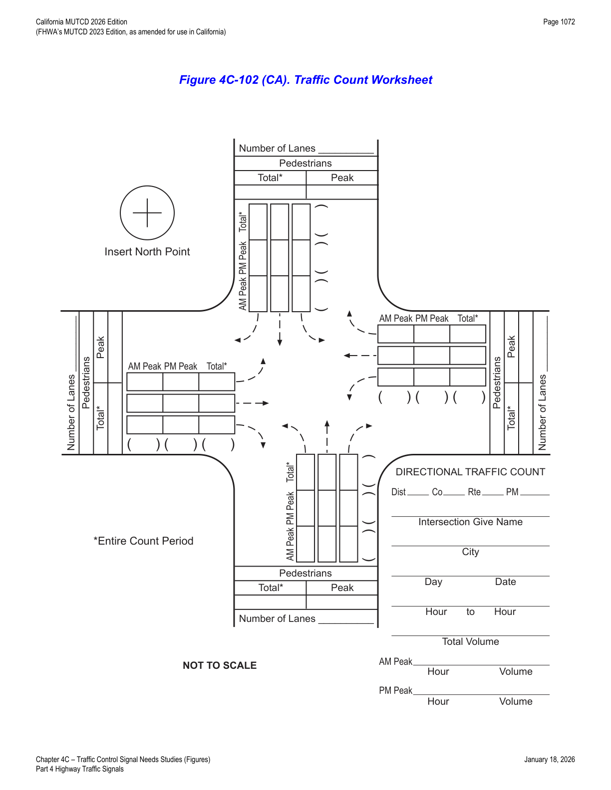
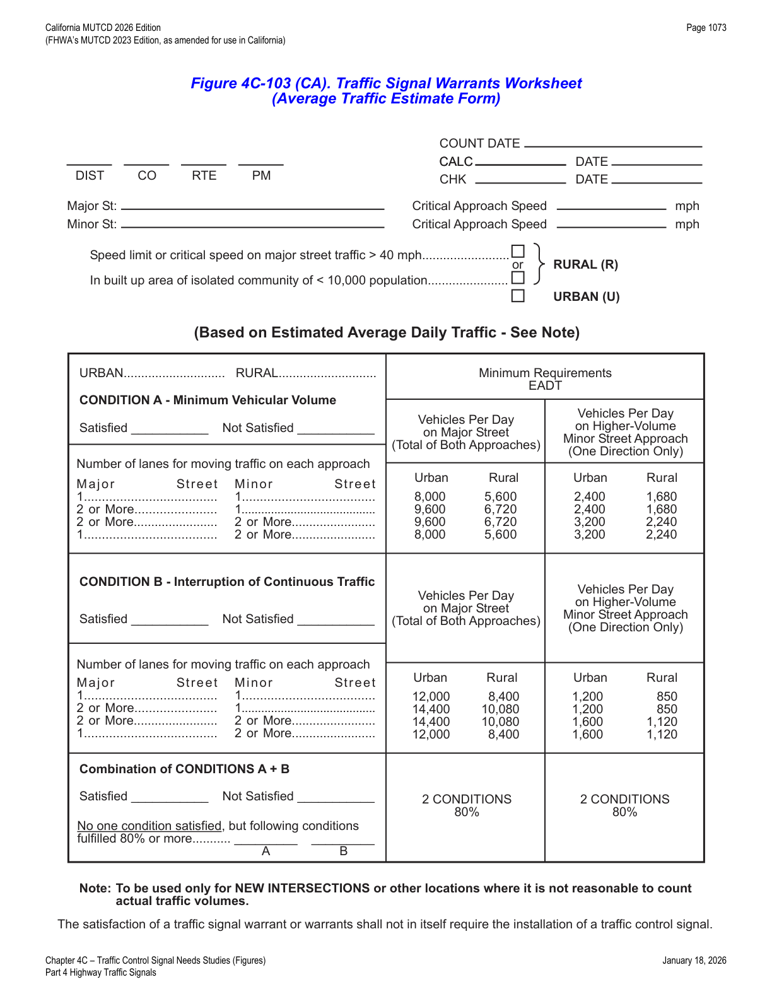
★ Key Takeaways — Chapter 4C
- An engineering study is mandatory before installing any (non-temporary-zone) traffic control signal, and satisfying a warrant never by itself requires installation — the study must independently show the signal will improve overall safety and/or operation.
- Nine warrants cover the field: Warrant 1 (Eight-Hour Vehicular Volume, Conditions A/B, Table 4C-1), Warrant 2 (Four-Hour Vehicular Volume, Figures 4C-1/4C-2), Warrant 3 (Peak Hour, delay + volume + total-entering-volume test or Figures 4C-3/4C-4), Warrant 4 (Pedestrian Volume, Figures 4C-5 through 4C-8), Warrant 5 (School Crossing, gaps-vs-minutes with ≥20 children/hour), Warrant 6 (Coordinated Signal System, ≥1,000 ft spacing), Warrant 7 (Crash Experience, Tables 4C-2 through 4C-5 plus 80% volume test), Warrant 8 (Roadway Network, ≥1,000 vph entering), and Warrant 9 (Intersection Near a Grade Crossing, ≤140 ft to track, Figures 4C-9/4C-10 with Tables 4C-6 through 4C-8 adjustment factors).
- Volume warrants (1, 2, 3, 4, 7) all offer reduced-threshold alternates (70%/56% columns, or separate lower-threshold curves) when the major-street speed exceeds 40 mph (35 mph for pedestrians) or the community population is under 10,000.
- Warrants 4 and 5, if satisfied and a signal installed, mandate compliant pedestrian signal heads (Chapter 4I); Warrant 9, if satisfied, mandates minor-street actuation, grade-crossing preemption (Sections 4F.19, 8D.09), and grade-crossing flashing-light signals.
- Bicyclists may be counted as vehicles or pedestrians in warrant analysis; right-turning minor-street traffic and split lane configurations require engineering judgment to correctly classify approaches as one-lane or two-lane for threshold lookups.